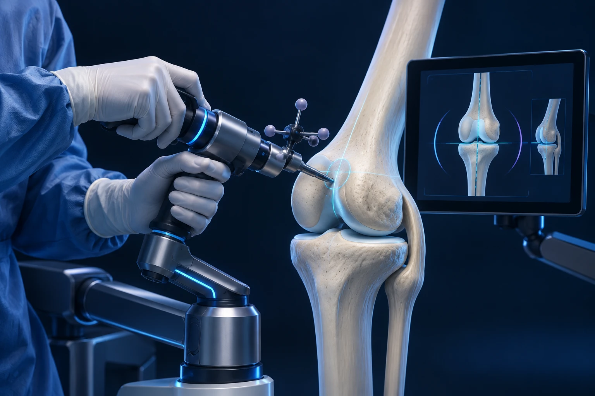

Prothèse du genou avec assistance robotique : qui opère et qu’est-ce que cela change ?

L’assistance robotique est un outil utilisé par le chirurgien pour préparer, guider ou contrôler certaines étapes de la pose d’une prothèse. Le robot ne décide pas seul de vous opérer et ne remplace pas l’équipe. Son intérêt doit être expliqué pour votre situation, sans confondre précision technique et garantie d’un meilleur résultat individuel.
Le robot réalise-t-il l’opération tout seul ?
Non. Le chirurgien reste responsable de l’indication, de la stratégie et des gestes opératoires. Selon le système, la technologie fournit des mesures, aide à planifier le positionnement des composants ou guide l’utilisation d’instruments. Les dispositifs ne fonctionnent pas tous de la même façon.
L’image d’un système de navigation peut aider : il apporte des informations et des repères, mais le professionnel reste aux commandes et doit interpréter la situation. En chirurgie, cette comparaison a une limite importante : les tissus sont vivants et les décisions ne reposent pas uniquement sur une carte.
Certains systèmes utilisent des images obtenues avant l’intervention ; d’autres construisent des repères pendant l’opération. Les besoins d’examens et les étapes techniques varient donc selon l’équipement. NICE, description des technologies d’assistance robotique.
Que cherche-t-on à améliorer ?
L’objectif est notamment d’aider à réaliser le projet de positionnement des implants et à apprécier certains paramètres du genou. Les mesures peuvent soutenir l’analyse de l’alignement et de l’équilibre articulaire. Elles complètent l’examen et le jugement du chirurgien.
Un meilleur respect d’un plan technique ne se traduit pas automatiquement par une différence ressentie par chaque patient. La douleur et la fonction après prothèse dépendent aussi de l’état initial, des tissus, de la santé générale et de la récupération.
Un essai randomisé publié en 2025 illustre cette distinction : un système robotique a amélioré certains résultats radiographiques sans montrer de différence significative sur plusieurs résultats cliniques précoces étudiés. Cette observation concerne le système et le suivi de cette étude ; elle ne permet pas de conclure pour tous les dispositifs. Essai clinique, précision radiologique et fonction.
Est-ce une autre sorte de prothèse ?
L’assistance robotique décrit une manière d’accompagner la pose. Elle ne signifie pas que l’implant contient un robot, un moteur ou une batterie. Après l’intervention, la prothèse fonctionne comme un dispositif articulaire mécanique, sans pilotage à distance.
La décision entre prothèse partielle et totale répond à l’état du genou et aux indications habituelles. La disponibilité d’un robot ne suffit pas à choisir l’une ou l’autre. Les implants utilisables et les indications autorisées dépendent également du système employé.
Vous pouvez donc distinguer trois questions pendant la consultation : ai-je besoin d’une prothèse, quel type de prothèse est adapté et quelle méthode de pose l’équipe propose-t-elle ? Les traiter dans cet ordre aide à comprendre la décision sans commencer par le nom d’une technologie.
Quels bénéfices sont réellement démontrés ?
Les études évaluent des critères différents : précision des coupes, positionnement, douleur, fonction, satisfaction ou nouvelles interventions. Une amélioration sur un critère ne démontre pas nécessairement une amélioration sur tous les autres. Le recul et le type de comparaison sont essentiels.
Dans l’essai RASKAL publié en 2026, l’assistance robotique a été comparée à une chirurgie assistée par ordinateur. Les résultats rapportés n’ont pas montré de différence sur plusieurs scores et sur la satisfaction jusqu’à deux ans, malgré des différences sur certains paramètres opératoires. Il ne s’agissait donc pas d’une comparaison simple avec toutes les formes de chirurgie conventionnelle. Essai RASKAL.
L’évaluation publiée par NICE en 2025 accompagne l’utilisation de plusieurs systèmes d’une production supplémentaire de données dans le système de santé britannique. Elle souligne que des incertitudes persistent. Ce cadre d’évaluation ne constitue pas une règle française de prise en charge ou de remboursement. NICE, recommandations HTG743.
Y a-t-il des risques ou des contraintes spécifiques ?
L’intervention conserve les risques d’une chirurgie prothétique : infection, phlébite, raideur, douleur persistante et complications mécaniques notamment. Une assistance technologique ne les fait pas disparaître. Selon les dispositifs, l’installation de repères ou de broches ajoute aussi des gestes qui doivent être expliqués.
La formation de l’équipe, la préparation et les vérifications font partie de l’utilisation du système. Demandez comment l’intervention serait poursuivie si l’assistance ne pouvait pas être utilisée. Cette question permet de comprendre la place de l’outil dans le parcours, sans supposer qu’un incident est attendu.
Si un examen supplémentaire est proposé avant l’opération, demandez son objectif. Tous les systèmes ne nécessitent pas les mêmes images. Il est préférable de suivre le bilan prescrit plutôt que de demander vous-même un scanner sur la base d’une description lue en ligne.
La récupération est-elle forcément plus rapide ?
Il n’est pas possible de promettre une récupération accélérée à chaque patient parce qu’un robot est utilisé. La cicatrisation, le contrôle de la douleur, la marche et la rééducation restent nécessaires. Le calendrier dépend de votre progression et du geste effectivement réalisé.
La préparation du domicile, les transports et les contraintes professionnelles doivent être anticipés comme pour toute prothèse. Une courte hospitalisation ne signifie pas que le genou est prêt immédiatement pour les efforts importants. La technologie ne remplace pas l’accompagnement après l’opération.
Quelles questions poser pour décider sereinement ?
Demandez ce que l’assistance apporte au projet prévu pour votre genou, quelles données soutiennent ce choix et quelles limites l’équipe identifie. Vous pouvez aussi demander quelles différences pratiques cela entraîne dans les examens, le déroulement et le suivi.
Le Dr François Lozach présente la place de l’assistance robotique parmi les techniques de chirurgie du genou. Pour discuter d’une prothèse à Sète, vous pouvez prendre rendez-vous avec le Dr François Lozach à Sète. Le choix se construit autour de votre genou, de vos attentes et d’un bénéfice raisonnablement attendu.
Ces conseils sont d’ordre général et ne remplacent pas un avis médical personnalisé.